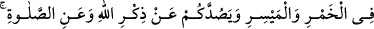
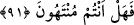

okları şeytan işi birer pisliktir.”
Müfessirlerin beyanına göre Cahiliye devrinde bir kişi sefere, savaşa, ticarete veya
başka bir şeye teşebbüs etmek istediği zaman, bu işin hayırlı olup olmadığını öğrenmek
için Kâbe’ye gider ve orada Kâbe’nin hizmetçisinin yanında bulunan oklardan birini
çekerdi. Orada üç ok vardı. Birinin üzerinde: “Rabb’im bana emretti.” diğerinin
üzerinde: “Rabbim beni nehyetti.” yazılı idi. Üçüncüsünün üzerinde ise yazı yoktu.
Üzerinde emir yazılı olan oku çekerse o işi yaparlardı. Nehiy yazılı ok çıkarsa o işi
yapmazlardı. Üzerinde bir şey yazmayan ok çıkarsa tekrar ok çekerlerdi.
“Oklarla kısmeti öğrenmek” anlamına gelen “
”, insanların kendi
kısmetlerine ayrılan şeyi önceden öğrenmek istemek demektir.
“Pislik” anlamına gelen “
”, necaset demektir. Ancak “necaset” insanın tab’an
nefret ettiği pis şeylerdir. “Rics” ise daha çok aklen nefret edilen pis şeyler için
kullanılır. Pis şeylerden kaçınıldığı gibi kaçınılsın diye sayılan günahlara rics, yani
pislik denilmiştir. Çünkü selim fıtrat bütün maddî ve manevî pisliklerden nefret eder.
“Şeytan işi pislik” denilmesi, böyle pis şeyleri şeytanın işleyenlerin gönlünde
süsleyip püslemesinden, insanları onlara çağırıp teşvik etmesi sebebiyledir.
“Bunlardan” pisliklerden “uzak durun ki kurtuluşa eresiniz.” Yani kendi
kurtuluşunuzu istiyorsanız, bunlardan mutlaka uzak durun. Buradaki “kaçının” emri
vücub ifade eder.
91. Şeytan içki ve kumar yoluyla ancak aranıza düşmanlık ve kin sokmak, sizi
Allah’ı anmaktan ve namazdan alıkoymak ister. Artık (bunlardan) vazgeçtiniz değil
mi?
“Şeytan içki ve kumar yoluyla ancak aranıza düşmanlık ve kin sokmak ister.” Bu,
içkinin dünyâya ait zararlarına işarettir. İçkiden kaynaklanan düşmanlık, içki içenler
sarhoş olup kavga çıkardıkları ve ağız dalaşı yaptıkları zaman ortaya çıkar. Tıpkı
Ensar’dan bir zâtın Sa’d b. Ebî Vakkas’ın başını deve kemiğiyle yarması gibi.
Kumardaki düşmanlığa gelince bu da şöyle olur: Ailesi ve malı üzerine kumar oynayan
kişi, kumarda kaybederek herşeyini yitirince, kederli bir şekilde kumar arkadaşlarına
karşı kin ve nefretle dolar.
Düşmanlık ile kin arasındaki fark şudur: Düşmana kin ve nefret duyulur ama, her kin
ve nefret duyulan düşman değildir.
Allah Teâlâ’nın “
” sözü “sebep olma” mânâsında içki sebebiyle, içki yoluyla